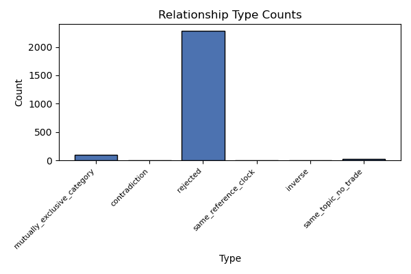
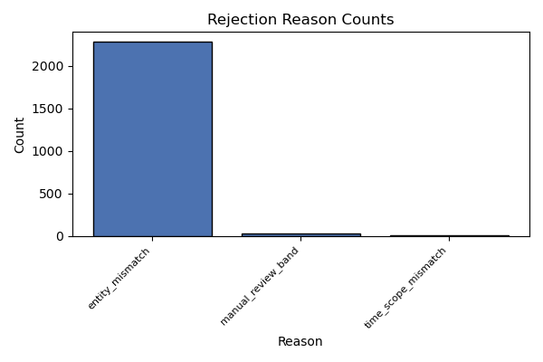
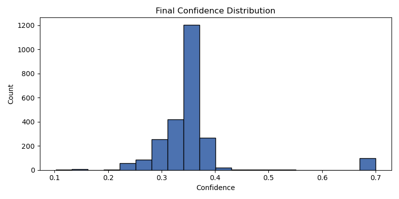

Generated: 2026-05-11T16:18:29Z
| Type | Count |
|---|---|
| rejected | 2286 |
| mutually_exclusive_category | 96 |
| same_topic_no_trade | 28 |
| same_reference_clock | 5 |
| contradiction | 4 |
| inverse | 1 |

| Reason | Count |
|---|---|
| entity_mismatch | 2285 |
| manual_review_band | 28 |
| time_scope_mismatch | 12 |


| relationship_id | market_id_a | market_id_b | type | family | status | strategy_eligibility | question_a | question_b | final_confidence | entity_score | time_score | threshold | candidate_a | candidate_b | shared_event |
|---|---|---|---|---|---|---|---|---|---|---|---|---|---|---|---|
| b758abf398df08350fe85b26c67b75f7 | 559653 | 559664 | mutually_exclusive_category | category | accepted | eligible | Will Alexandria Ocasio-Cortez win the 2028 Democratic presidential nomination? | Will Raphael Warnock win the 2028 Democratic presidential nomination? | 0.7 | 0.0 | 1.0 | Alexandria Ocasio-Cortez | Raphael Warnock | 2028_democratic_presidential_nomination | |
| f651defc6023435939f60d7cb4debc79 | 561251 | 561261 | mutually_exclusive_category | category | accepted | eligible | Will LeBron James win the 2028 US Presidential Election? | Will Jon Ossoff win the 2028 US Presidential Election? | 0.7 | 0.0 | 1.0 | LeBron James | Jon Ossoff | 2028_us_presidential_election | |
| b09a627b3b7963d0764295d235d33bcc | 559655 | 559664 | mutually_exclusive_category | category | accepted | eligible | Will Josh Shapiro win the 2028 Democratic presidential nomination? | Will Raphael Warnock win the 2028 Democratic presidential nomination? | 0.7 | 0.0 | 1.0 | Josh Shapiro | Raphael Warnock | 2028_democratic_presidential_nomination | |
| ea97dcce0d14cb89403968d08a8cdcd1 | 559655 | 559692 | mutually_exclusive_category | category | accepted | eligible | Will Josh Shapiro win the 2028 Democratic presidential nomination? | Will Jasmine Crockett win the 2028 Democratic presidential nomination? | 0.7 | 0.0 | 1.0 | Josh Shapiro | Jasmine Crockett | 2028_democratic_presidential_nomination | |
| 5d4c6b730250a0b05c394ab1aac000cd | 559657 | 559664 | mutually_exclusive_category | category | accepted | eligible | Will Stephen A. Smith win the 2028 Democratic presidential nomination? | Will Raphael Warnock win the 2028 Democratic presidential nomination? | 0.7 | 0.0 | 1.0 | Stephen A. Smith | Raphael Warnock | 2028_democratic_presidential_nomination | |
| 04d57c6b7c505b644708ea72e0c3213d | 559657 | 559692 | mutually_exclusive_category | category | accepted | eligible | Will Stephen A. Smith win the 2028 Democratic presidential nomination? | Will Jasmine Crockett win the 2028 Democratic presidential nomination? | 0.7 | 0.0 | 1.0 | Stephen A. Smith | Jasmine Crockett | 2028_democratic_presidential_nomination | |
| ec6b851d0c0897603a6fca028c280a57 | 559660 | 559664 | mutually_exclusive_category | category | accepted | eligible | Will Andy Beshear win the 2028 Democratic presidential nomination? | Will Raphael Warnock win the 2028 Democratic presidential nomination? | 0.7 | 0.0 | 1.0 | Andy Beshear | Raphael Warnock | 2028_democratic_presidential_nomination | |
| 101932e46d22fc918fb5a4a9ea7642df | 559660 | 559692 | mutually_exclusive_category | category | accepted | eligible | Will Andy Beshear win the 2028 Democratic presidential nomination? | Will Jasmine Crockett win the 2028 Democratic presidential nomination? | 0.7 | 0.0 | 1.0 | Andy Beshear | Jasmine Crockett | 2028_democratic_presidential_nomination | |
| 3830b270af9d01e1a69266b282cbc635 | 559663 | 559664 | mutually_exclusive_category | category | accepted | eligible | Will J.B. Pritzker win the 2028 Democratic presidential nomination? | Will Raphael Warnock win the 2028 Democratic presidential nomination? | 0.7 | 0.0 | 1.0 | J.B. Pritzker | Raphael Warnock | 2028_democratic_presidential_nomination | |
| 6be6a79d32a399c42d171b11026193d3 | 559663 | 559692 | mutually_exclusive_category | category | accepted | eligible | Will J.B. Pritzker win the 2028 Democratic presidential nomination? | Will Jasmine Crockett win the 2028 Democratic presidential nomination? | 0.7 | 0.0 | 1.0 | J.B. Pritzker | Jasmine Crockett | 2028_democratic_presidential_nomination | |
| f9a3a55ae0fe3db13c6c6ef3f620c21b | 559664 | 559666 | mutually_exclusive_category | category | accepted | eligible | Will Raphael Warnock win the 2028 Democratic presidential nomination? | Will Tim Walz win the 2028 Democratic presidential nomination? | 0.7 | 0.0 | 1.0 | Raphael Warnock | Tim Walz | 2028_democratic_presidential_nomination | |
| bc0df109a56f2652543141cd171b1401 | 559664 | 559667 | mutually_exclusive_category | category | accepted | eligible | Will Raphael Warnock win the 2028 Democratic presidential nomination? | Will Michelle Obama win the 2028 Democratic presidential nomination? | 0.7 | 0.0 | 1.0 | Raphael Warnock | Michelle Obama | 2028_democratic_presidential_nomination | |
| ace30584469cff3f09dd38f9eecd90a6 | 559664 | 559669 | mutually_exclusive_category | category | accepted | eligible | Will Raphael Warnock win the 2028 Democratic presidential nomination? | Will Rahm Emanuel win the 2028 Democratic presidential nomination? | 0.7 | 0.0 | 1.0 | Raphael Warnock | Rahm Emanuel | 2028_democratic_presidential_nomination | |
| 7cbb0c4c1527ba30e40c541a09acf7db | 559664 | 559671 | mutually_exclusive_category | category | accepted | eligible | Will Raphael Warnock win the 2028 Democratic presidential nomination? | Will Zohran Mamdani win the 2028 Democratic presidential nomination? | 0.7 | 0.0 | 1.0 | Raphael Warnock | Zohran Mamdani | 2028_democratic_presidential_nomination | |
| f947fe6ffd0ca153ba494bcb83f3d5fd | 559664 | 559677 | mutually_exclusive_category | category | accepted | eligible | Will Raphael Warnock win the 2028 Democratic presidential nomination? | Will Hillary Clinton win the 2028 Democratic presidential nomination? | 0.7 | 0.0 | 1.0 | Raphael Warnock | Hillary Clinton | 2028_democratic_presidential_nomination | |
| 0bfed1102544c0b5c1004e56ae114d57 | 559664 | 559678 | mutually_exclusive_category | category | accepted | eligible | Will Raphael Warnock win the 2028 Democratic presidential nomination? | Will Liz Cheney win the 2028 Democratic presidential nomination? | 0.7 | 0.0 | 1.0 | Raphael Warnock | Liz Cheney | 2028_democratic_presidential_nomination | |
| de90120a8d591983a1617bd1111c7e06 | 559664 | 559681 | mutually_exclusive_category | category | accepted | eligible | Will Raphael Warnock win the 2028 Democratic presidential nomination? | Will LeBron James win the 2028 Democratic presidential nomination? | 0.7 | 0.0 | 1.0 | Raphael Warnock | LeBron James | 2028_democratic_presidential_nomination | |
| 564f960768d45b186a84130de4871749 | 559664 | 559683 | mutually_exclusive_category | category | accepted | eligible | Will Raphael Warnock win the 2028 Democratic presidential nomination? | Will George Clooney win the 2028 Democratic presidential nomination? | 0.7 | 0.0 | 1.0 | Raphael Warnock | George Clooney | 2028_democratic_presidential_nomination | |
| ca5e0568d88d8605a101fc658242c8ad | 559664 | 559684 | mutually_exclusive_category | category | accepted | eligible | Will Raphael Warnock win the 2028 Democratic presidential nomination? | Will Chelsea Clinton win the 2028 Democratic presidential nomination? | 0.7 | 0.0 | 1.0 | Raphael Warnock | Chelsea Clinton | 2028_democratic_presidential_nomination | |
| 7438ea39d26c0db70da672b8ac9a40ee | 559664 | 559686 | mutually_exclusive_category | category | accepted | eligible | Will Raphael Warnock win the 2028 Democratic presidential nomination? | Will Dwayne 'The Rock' Johnson win the 2028 Democratic presidential nomination? | 0.7 | 0.0 | 1.0 | Raphael Warnock | Dwayne 'The Rock' Johnson | 2028_democratic_presidential_nomination |
No accepted contradiction or inverse candidates.
| relationship_id | market_id_a | market_id_b | type | family | status | strategy_eligibility | question_a | question_b | final_confidence | entity_score | time_score | threshold | candidate_a | candidate_b | shared_event |
|---|---|---|---|---|---|---|---|---|---|---|---|---|---|---|---|
| 8cd78a1977f5200ff342e072bdd6bf15 | 559667 | 561257 | same_topic_no_trade | unknown | rejected | eligible | Will Michelle Obama win the 2028 Democratic presidential nomination? | Will Michelle Obama win the 2028 US Presidential Election? | 0.4000 | 0.800 | 1.0 | ||||
| e5267754e49a11237e3cd6f4d4a5eda2 | 559671 | 561256 | same_topic_no_trade | unknown | rejected | eligible | Will Zohran Mamdani win the 2028 Democratic presidential nomination? | Will Zohran Mamdani win the 2028 US Presidential Election? | 0.4000 | 0.800 | 1.0 | ||||
| 671c63a001cfdfe037255346d48f4dd6 | 559660 | 561237 | same_topic_no_trade | unknown | rejected | eligible | Will Andy Beshear win the 2028 Democratic presidential nomination? | Will Andy Beshear win the 2028 US Presidential Election? | 0.3989 | 0.800 | 1.0 | ||||
| 67702d888fa0ce85614d831561f2d55b | 559653 | 561231 | same_topic_no_trade | unknown | rejected | eligible | Will Alexandria Ocasio-Cortez win the 2028 Democratic presidential nomination? | Will Alexandria Ocasio-Cortez win the 2028 US Presidential Election? | 0.3989 | 0.800 | 1.0 | ||||
| 9814f0b1f2c1e137cdd0f01081c9d79d | 561248 | 561981 | same_topic_no_trade | unknown | rejected | eligible | Will Vivek Ramaswamy win the 2028 US Presidential Election? | Will Vivek Ramaswamy win the 2028 Republican presidential nomination? | 0.3959 | 0.800 | 1.0 | ||||
| 7b13eefd6d90d2688ac31722ff8efe17 | 561260 | 562005 | same_topic_no_trade | unknown | rejected | eligible | Will Thomas Massie win the 2028 US Presidential Election? | Will Thomas Massie win the 2028 Republican presidential nomination? | 0.3940 | 0.775 | 1.0 | ||||
| 5b9170e0c89e0e7ad7bb127a5796d918 | 559666 | 561247 | same_topic_no_trade | unknown | rejected | eligible | Will Tim Walz win the 2028 Democratic presidential nomination? | Will Tim Walz win the 2028 US Presidential Election? | 0.3933 | 0.800 | 1.0 | ||||
| 1c302d09aad4deb9ff7250e3c822df1d | 561238 | 561977 | same_topic_no_trade | unknown | rejected | eligible | Will Glenn Youngkin win the 2028 US Presidential Election? | Will Glenn Youngkin win the 2028 Republican presidential nomination? | 0.3923 | 0.800 | 1.0 | ||||
| d1665f8688af505f6969f6abefb096d6 | 559694 | 561259 | same_topic_no_trade | unknown | rejected | eligible | Will Ro Khanna win the 2028 Democratic presidential nomination? | Will Ro Khanna win the 2028 US Presidential Election? | 0.3914 | 0.775 | 1.0 | ||||
| 2d911c0905127bffd7fd430f4b610760 | 559654 | 561232 | same_topic_no_trade | unknown | rejected | eligible | Will Pete Buttigieg win the 2028 Democratic presidential nomination? | Will Pete Buttigieg win the 2028 US Presidential Election? | 0.3914 | 0.775 | 1.0 |
| relationship_id | market_id_a | market_id_b | type | family | status | strategy_eligibility | question_a | question_b | final_confidence | entity_score | time_score | threshold | candidate_a | candidate_b | shared_event |
|---|---|---|---|---|---|---|---|---|---|---|---|---|---|---|---|
| cc376429463d78167ad174e43317b2d3 | 559690 | 562003 | contradiction | contradiction | needs_manual_review | eligible | Will Kim Kardashian win the 2028 Democratic presidential nomination? | Will Kim Kardashian win the 2028 Republican presidential nomination? | 0.5283 | 0.775 | 1.0 | ||||
| 8b937b1b819dbf225c72414c3b5653d9 | 559686 | 561252 | contradiction | contradiction | needs_manual_review | eligible | Will Dwayne 'The Rock' Johnson win the 2028 Democratic presidential nomination? | Will Dwayne 'The Rock' Johnson win the 2028 US Presidential Election? | 0.4517 | 0.800 | 1.0 | ||||
| 656c1df5bb31997622521bc9e9f0adc6 | 540819 | 540843 | same_reference_clock | temporal | needs_manual_review | ineligible | Will Jesus Christ return before GTA VI? | Will China invades Taiwan before GTA VI? | 0.4200 | 0.000 | 1.0 | ||||
| 3510fa79844874170bc5aa27001fd3f9 | 540818 | 540843 | same_reference_clock | temporal | needs_manual_review | ineligible | New Playboi Carti Album before GTA VI? | Will China invades Taiwan before GTA VI? | 0.4200 | 0.000 | 1.0 | ||||
| 9f8979f5595d8799aa56516df800886a | 540817 | 540843 | same_reference_clock | temporal | needs_manual_review | ineligible | New Rihanna Album before GTA VI? | Will China invades Taiwan before GTA VI? | 0.4200 | 0.000 | 1.0 | ||||
| a38a46b0aa9e43da32288b6491f29802 | 540843 | 540844 | same_reference_clock | temporal | needs_manual_review | ineligible | Will China invades Taiwan before GTA VI? | Will bitcoin hit $1m before GTA VI? | 0.4200 | 0.000 | 1.0 | ||||
| 2fc7c0bfadee801d685006086656d299 | 540820 | 540843 | same_reference_clock | temporal | needs_manual_review | ineligible | Trump out as President before GTA VI? | Will China invades Taiwan before GTA VI? | 0.4200 | 0.000 | 1.0 | ||||
| ce1403a76b3c8a70b5e36e97d0a18741 | 561234 | 561975 | inverse | contradiction | needs_manual_review | eligible | Will Marco Rubio win the 2028 US Presidential Election? | Will Marco Rubio win the 2028 Republican presidential nomination? | 0.4138 | 0.800 | 1.0 | ||||
| d6f3e0670c0e7765406d5af2709303ed | 561245 | 561980 | contradiction | contradiction | needs_manual_review | eligible | Will Nikki Haley win the 2028 US Presidential Election? | Will Nikki Haley win the 2028 Republican presidential nomination? | 0.4052 | 0.800 | 1.0 | ||||
| 4ceb6c57b9a9908fcbbbe636c2b57b9d | 559658 | 561239 | contradiction | contradiction | needs_manual_review | eligible | Will Kamala Harris win the 2028 Democratic presidential nomination? | Will Kamala Harris win the 2028 US Presidential Election? | 0.4017 | 0.775 | 1.0 |
No-thinking check: PASS